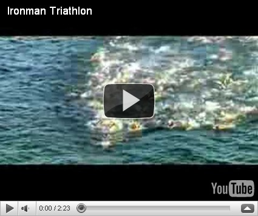

幫助東華鐵人隊完成 Ironman 226KM 賽事的夢想
《經典 3.0》辦了一個夢想資助計畫的網路票選活動，希望讀者能透過閱讀經典（必須是去世 70 年以上的作者所完成的作品），激發夢想。國峰的夢想是跟東華鐵人隊的教練與全體隊員出國完成一場最正統也最艱難的鐵人比賽－－「Ironman 226KM」，那是一場要在冰冷的海水裡游上 3.8 公里，再騎 180 公里，最後再跑一個馬拉松 42.195 公里的鐵人級賽事！那也是最原始的正統「鐵人賽」！

東華鐵人隊的教練—Benjamin Rush 一直夢想帶全體隊員完成此一賽事，但限於龐大的經費（光報名費就要 17,600nt，加上機票與食宿，每人約需十萬元的經費）。國峰目前是東華鐵人隊的助理教練，在得知《經典 3.0》之”夢想實現”之後，就報名參加。目前已進入複選，希望大家上網幫忙投票，支持東華鐵人隊出國完成此一夢想。
- 投票網址：**http://classicsnow.net/plan/content.php?id=2612**
- 第二階段投票時間：2011 年 1 月 4 日（二）至 2011 年 1 月 14 日（五）止

- 2010 年東華鐵人隊今年在臺灣墾丁完成 Half Ironman 113KM 後合照(這是臺灣第一場 Half Ironman)
- 臺灣沒有正統的 Ironman 全程賽事，故而我們只能出國完成！
以下為企畫書內容：
一、你是因為讀了哪一本書，有了什麼樣的感動讓你有這個夢想？
我在東華就讀中文研究所期間，讀了《山海經》這本中國古代神話故事，最被其中夸父追日的故事所吸引。
《山海經．海外北經》：「夸父與日逐走，入日。渴欲得飲，飲于河、渭。河、渭不足，北飲大澤。未至，道渴而死。棄其杖，化為鄧林。」
在研究所期間加入東華大學鐵人三項代表隊，與教練和隊友一同練習與比賽的過程中，始終覺得我們就像古代的傳說中的夸父一樣。那就像顏崑陽老師在其散文集所述：「在古老的傳說中，夸父總被人譏為愚蠢與不自量力。因為他追逐著落日，直到渴死。為什麼我們要將這種追求到底的執著譏為愚蠢？為什麼我們要將這份敢於追求的勇氣譏為不自量力？知道做不到，而還肯去做的人，總比善於為自己的怠惰找藉口的人，來得聰明些吧！因為誰說過：『力之執著，即是智慧』。能將自己的生命投注在一份理想的追求中，總比徒然無謂的苟存，要有意義多了吧！因為誰說過：『殉真理而死，即是另一種存在。』如是，我們還能去譏誚夸父的荒誕嗎？」（以上文字摘自顏崑陽：《新世紀散文家：顏崑陽精選集》，臺北市：九歌，2003 年 10 月 10 日，頁 80-81。）
二、因此激發了什麼樣的夢想？
我想要在八月份和東華大學鐵人隊的教練和隊員們到加拿大完成一場 Ironman 226KM 的超級鐵人三項賽。這是一場需要游 3.8 公里、騎自行車 180 公里，最後再跑 42.195 公里的三項全能競賽。我們將成為全臺灣第一個出國完成 Ironman 226KM 的大學校隊。包括機票、報名費與旅費，這要花上百萬元，而且比賽的過程極度艱辛，我們必須在冰冷的海水中游泳，崎嶇的山路中騎車與跑步，這個夢想被身旁的朋友譏為愚蠢與不自量力，但我們想要完成此一如夸父追日般的夢想。我們很清楚地知道自己不可能在這場國際賽事中拿到揚威國際的名次，但我們還是要把自己的生命投注在此種對體能極限的追求中。我們還是要再努力下去……從練習、籌資、準備裝備到完成這場 Ironman 的賽事的過程中，體會夸父「力之執著」中那無法言說的智慧。
三、你準備如何進行，花多少時間實現？
我們從 2006 年至 2010 年已經在臺灣完成近二十場三項全能賽(見附檔資料)，在 2011 將花八個月的時間來從事紀律化練習與籌資旅費(每日練習課表可見東華鐵人隊 FACEBOOK：http://www.facebook.com/NDHU.Triathlon
練習的部分由鐵人隊教練 Benjamin Rush 教練負責，國峰(企畫提案人)從旁協助。每週我們將練習六天，連續八個月：在花蓮鯉魚潭練習開放式水域的游泳賽程，在台十一線上從壽豐騎到長虹橋練習 180 公里的自行車賽程，在吉安楓林步道或東華大學校園裡練跑。這八個月期間，我們將舉辦訓練營以及靠各人打工來存錢。
預定每個星期的訓練里程數：游泳 10 公里、自行車 350 公里、跑步 90 公里。從二零一一年一月中寒假開始，一直訓練到八月比賽前。
四，為了實現你的夢想，請說明你的預算
- 交通費：花蓮-台北 / 火車(自強號來回車票)：$882 × 9(人)=$7,938；台北-桃園機場 / 接駁巴士(來回車票)：$230 × 9(人)=$2,070；台灣--加拿大, CAN / 飛機(來回機票)：$68,800 × 9(人)=$619,200
- 報名費(美金 $550 USD / 人)：Ironman 國際分區資格賽報名費 (加拿大)：$17,600 × 9(人)=$158,400
- 當地食宿(美金 $100 USD / 天)：$3,200 × 9(人) × 14 天=$403,200 (必須提前報到，而且在當地練習以適應當地氣候與場地)
- 保險(2011/08/22 - 2011/09/05) ：500 萬旅遊平安險 / 人：$832× 9(人)=$7,488
- 合計: $1,198,296
- 不足差額 ：我們將從東華大學鐵人三項代表隊的隊費中挪用部分經費，也將在這八個月期間舉辦鐵人三項訓練營，除了推廣鐵人三項也可利用盈餘籌資旅費，同時各隊員也將各處尋找贊助資源，同時利用課餘時間各自打工來補足差額。總之，我們勢必要完成此一夢想！即使「未至，道渴而死。」我們所留下的精神之杖，也將化為鄧林，形成無價的力量。